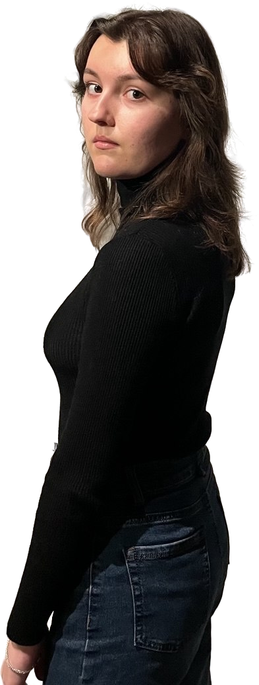
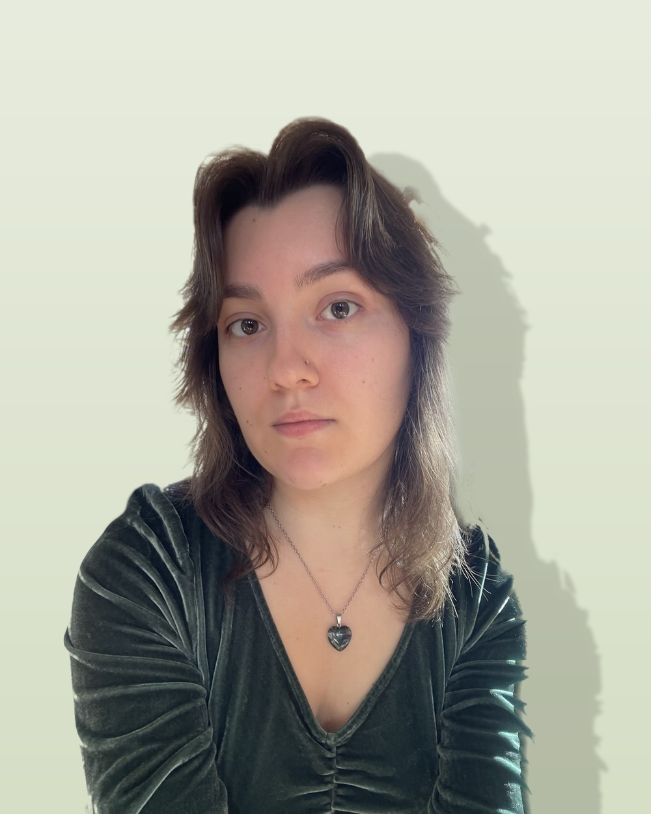
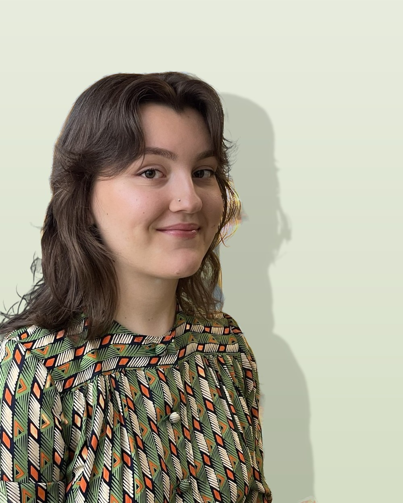

Отношение к себе
- Нестабильная самооценка, жёсткая самокритика
- Перфекционизм, прокрастинация, страх ошибки
- Непонимание своих желаний и потребностей
Пространство, где безопасно быть собой
Индивидуальные консультации для взрослых — очно в Санкт-Петербурге и онлайн.

Схема-терапияКПТочно · онлайн
с собой
— Без оценок, без спешки и без давления. Можно говорить о стыде, вине и тревоге.
[ мой подход ]
Я работаю в схема-терапии и КПТ — подходах с подтверждённой эффективностью. Мы вместе исследуем вашу ситуацию и ищем решения, подходящие именно вам, а не советы «сверху».
Как устроена работаНе нашли своего запроса? Напишите — обсудим индивидуально, и я честно скажу, смогу ли быть полезна.

[ обо мне ]
В работе я создаю пространство, где безопасно быть собой. Я ценю открытость, поэтому строю диалог так, чтобы вы могли говорить о сложном без страха быть непонятой.
Мой главный принцип — полная безоценочность. Я с уважением отношусь к вашему выбору, взглядам и образу жизни.
Я продолжаю учиться — поэтому мой профессиональный уровень постоянно растёт.
[ формат и стоимость ]
Индивидуальная консультация длится 50 минут. Оплата — переводом не позднее чем за 24 часа до встречи.
2 500 ₽
Уютный кабинет в центре Санкт-Петербурга: м. Маяковская, Сенная / Спасская / Садовая, Невский проспект — и другие по запросу.
Записаться очно2 000 ₽
По видеосвязи из любой точки: Яндекс Телемост или Контур Толк.
Записаться онлайн[ вопросы ]

Напишите мне в Telegram или на почту. Укажите имя и кратко опишите запрос — тему, с которой хотите поработать. Мы согласуем удобное время.
Переводом на карту не позднее чем за 24 часа до сессии — это подтверждение нашей встречи. Сразу после оплаты я отправлю чек.
Мы познакомимся и в безопасной обстановке обсудим ваш запрос. Я помогу бережно прояснить детали и наметить возможные пути. А вы сможете прислушаться к себе и решить, комфортно ли вам со мной работать.
[ контакты ]
Если остались вопросы — буду рада ответить.